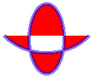

Практическое руководство. Заливка открытых фигур
Вы можете указать путь, передав GraphicsPath объект FillPath метод. FillPath Метод заполняет пути в соответствии с режимом заполнения (чередование или поворот), заданных в настоящее время для пути. Если путь содержит незамкнутые фигуры, путь будет заполнено так, как если бы эти цифры были закрыты. GDI+ замыкает фигуру рисования прямую линию от его конечной точки до ее начала.
Пример
В следующем примере создается путь, который имеет один незамкнутую фигуру (дугу) и одну замкнутую фигуру (эллипс). FillPath Метод заливку пути в соответствии с режимом заполнения по умолчанию, который является Alternate.
Ниже показан результат выполнения примера кода. Обратите внимание, что путь заполняется (согласно Alternate) как будто открытая фигура замкнута прямой линией в конечной точке для начальной точкой.

GraphicsPath path = new GraphicsPath();
// Add an open figure.
path.AddArc(0, 0, 150, 120, 30, 120);
// Add an intrinsically closed figure.
path.AddEllipse(50, 50, 50, 100);
Pen pen = new Pen(Color.FromArgb(128, 0, 0, 255), 5);
SolidBrush brush = new SolidBrush(Color.Red);
// The fill mode is FillMode.Alternate by default.
e.Graphics.FillPath(brush, path);
e.Graphics.DrawPath(pen, path);
Компиляция кода
Предыдущий пример предназначен для работы с Windows Forms и требует PaintEventArgs e, который является параметром Paint обработчик событий.